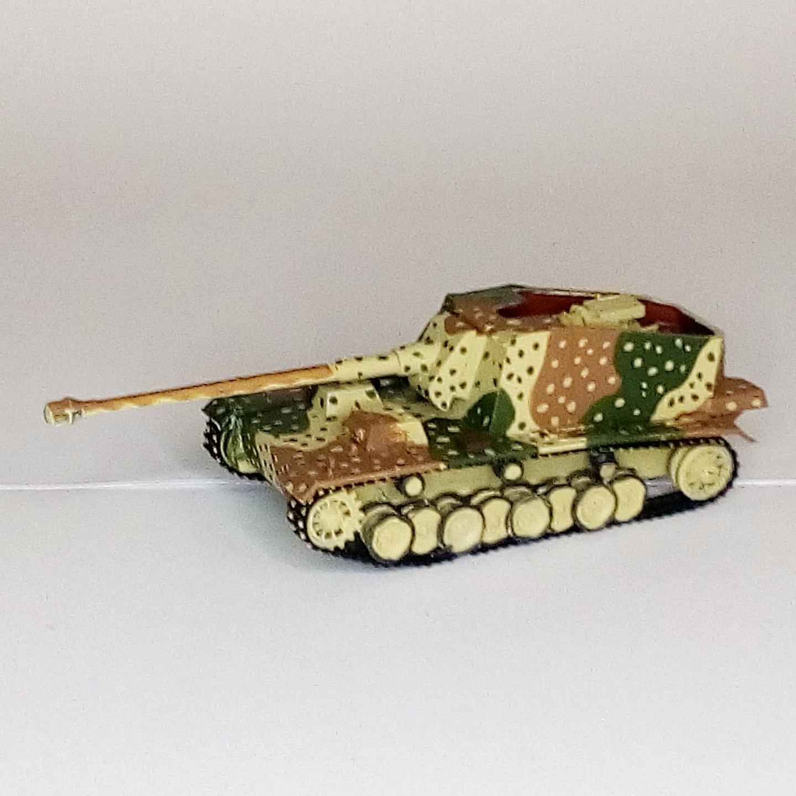

Mezzi militari · scale model archive
12,8-cm-Selbstfahrlafette L/61 (Pz.Sfl. V) 'Sturer Emil'
12,8-cm-Selbstfahrlafette L/61 (Pz.Sfl. V) 'Sturer Emil' — Kit: Trumpeter, Scale: 1/72. #1/72 #Trumpeter

Photo gallery
English description
#1/72 #Trumpeter